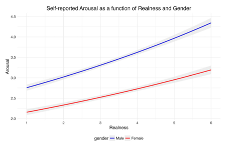
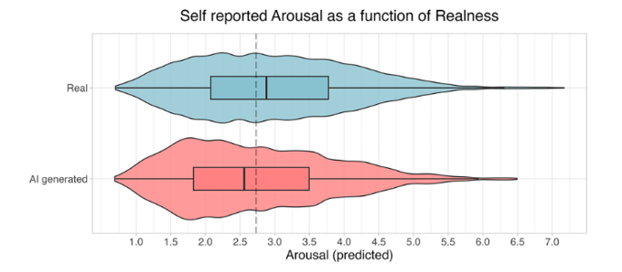
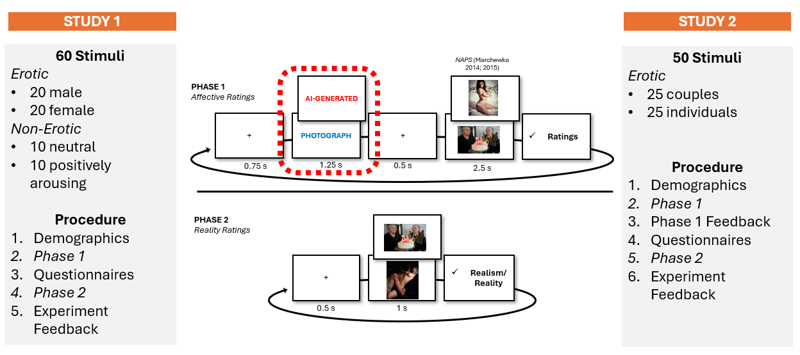
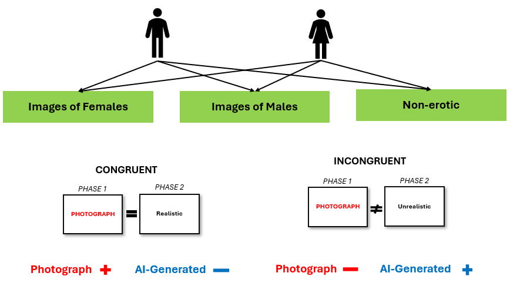
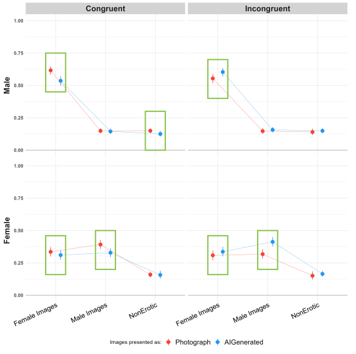
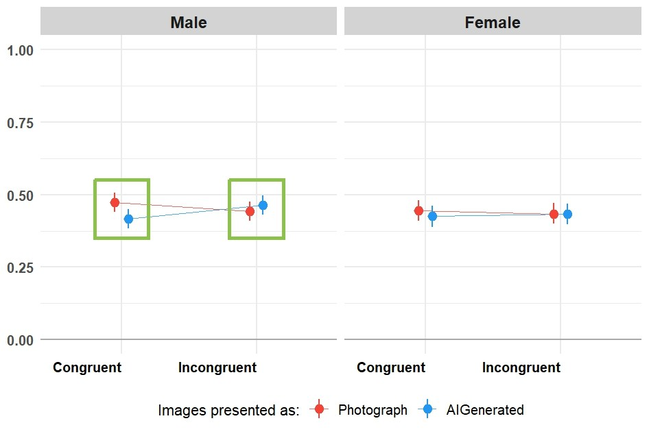
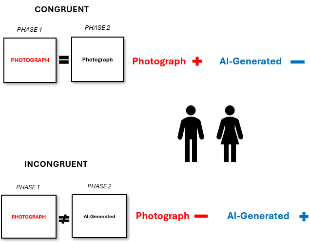
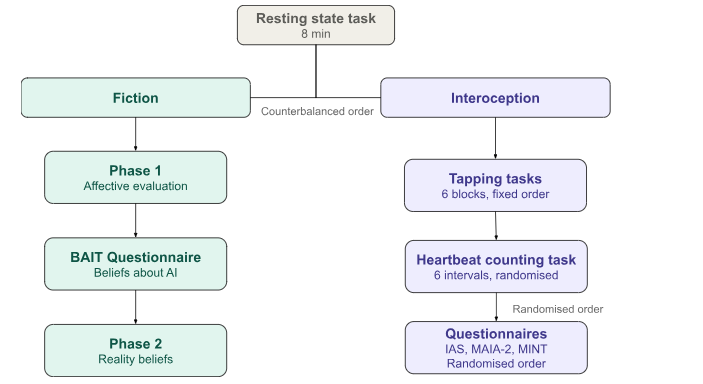
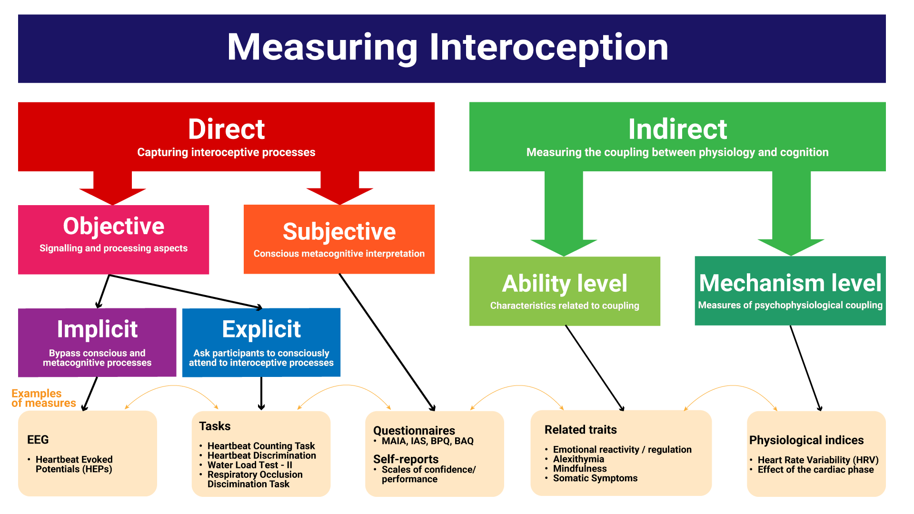

FictionEroPhysio
The experiment: what we do, and why we do it this way
a.neves@sussex.ac.uk
Background
Generative AI
- Today’s AI systems are mostly generative: they learn patterns from huge datasets and use them to create new content on request
- What sets them apart is realism: their output is often hard to tell apart from human-made content
- That realism has consequences:
- Misinformation and deepfakes
- Exploitation (e.g., non-consensual sexual deepfakes) and fraud
- Questions about creativity and authorship
As the visual clues disappear, the question shifts from “can people spot AI content?” to “how do people decide what is real, and what does that decision do to how they feel?”
Two ways to study the impact of AI
Actual origin
Compare real AI-generated content with real human-made content
- People struggle to tell them apart (Nightingale & Farid, 2022; Lago et al., 2022)
- Unlabelled AI faces are even rated more trustworthy than real ones
Believed origin
Show the same content but change what people are told about where it came from
- Content labelled as AI-generated is rated less positively: the anti-AI bias (Liefooghe et al., 2023; Eiserbeck et al., 2023; Ansani et al., 2025)
The image is identical, only the belief changes, so the bias must come from beliefs about authorship, not from anything visible in the image.
The Reality Bending Lab
We use the believed-origin approach and have tested AI labels on:
- Art
- Faces
- Negative stimuli
- Films
- Chats
- Erotic stimuli
Why erotic stimuli?
- High arousal and positive valence: they capture attention as much as, or more than, fear- and disgust-related images
- Strong, measurable bodily responses
- Most other anti-AI work used positive vs negative stimuli that were not matched for arousal
- A real target for AI misuse: most deepfake videos online are non-consensual sexual material
AI labels and erotic stimuli
Marini et al. (2024): soft erotic images (models in underwear), Italian samples
Study 1 (N = 58)
The more realistic participants rated an image, the more arousing they found it

Study 2 (N = 108)
Identical images were rated more arousing when labelled as real than as AI-generated

FictionEro
Our first study building on this work (under review)
What we changed from Marini et al.
- Much larger, multi-country samples (4 languages)
- Validated stimuli from the NAPS ERO database
- Three ratings: arousal, valence, enticement
- A second phase measuring beliefs about each image
FictionEro: Methods

Study 1: Results
Rating ~ Gender / Relevance / Condition * Congruence + (Relevance / Condition | Participants) + (1 | Item)

N = 705 heterosexual participants (age M = 30.2 ± 11.8; 35.7% female)
Green box = Probability of Direction > 97.5%

Study 2: Results
Rating ~ Gender / Condition * Congruence + (Condition | Participants) + (1 | Item)


N = 261 heterosexual participants (age M = 37.4 ± 12.7; 48.7% female)
Green box = Probability of Direction > 97.5%
FictionEro: the take-home message
Congruent trials
The participant’s later belief agreed with the label
→ Photograph > AI-generated: the expected anti-AI bias
Incongruent trials
The participant’s later belief disagreed with the label
→ the difference reversed
The label alone does not drive the effect. What matters is whether people believe it, and believing seems to be linked to how the image made them feel.
The current experiment
Research question
Do interoceptive abilities explain who shows the anti-AI bias, and why?
Anti-AI bias
A lower response to content believed to be AI-generated
We treat it as the measurable footprint of a reality belief (next slide)
Interoception
How well a person detects, interprets and integrates signals from inside their body, such as their heartbeat (Khalsa et al., 2018)
Why is the anti-AI bias about reality?
- For art, an AI label can mean “less effort” or “not made by a human”
- For an erotic image, it means no real person exists: the label is a claim about reality, not just authorship
- So the bias is the footprint of a reality belief, not the belief itself:
- Phase 1: what the belief does to feelings (the bias)
- Phase 2: the belief itself (“is this image real?”)
But isn’t it just disliking AI?
We measure AI attitudes with the BAIT. In FictionEro, AI attitudes did not reliably change the size of the label effect, while people’s beliefs about each image did.
Two directions between belief and feeling
Belief → Affect
“I was told it’s AI, so I feel less”
- Top-down: the label shapes the response
- Marini et al. Study 2
- Most anti-AI bias research looks at this direction
Affect → Belief
“It made me feel something, so it must be real”
- Bottom-up: the response shapes the belief
- Marini et al. Study 1
- Much less studied
FictionEroPhysio separates these two directions in time:
- Belief → Affect Phase 1 alone: does the label change how people feel about the image?
- Affect → Belief Phase 1 and Phase 2 together: does how someone felt about an image in Phase 1 predict whether they later judge that same image to be real?
Phase 2 itself only measures the belief; the affect → belief link comes from connecting the two phases.
Why would the body matter for reality beliefs?
- Reality monitoring (deciding what is real) depends on how vivid an experience feels (Johnson & Raye, 1981), and emotional experiences feel more vivid
- Affective reality hypothesis (Makowski ref): stronger emotional and bodily reactions push judgements towards “real”…
- …until reactions get so intense that regulation kicks in and pushes back towards “fake” (an inverted U shape)
- Erotic images are one of the few stimuli arousing enough to test the descending side of this curve
- Interoception is altered when reality monitoring goes wrong:
- Psychosis: higher resting heart rate, lower HRV, lower interoceptive accuracy
- Dissociation: lower interoceptive accuracy and less trust in bodily signals (Woelk & Garfinkel, 2024; McDonald et al., 2026)
The bridge to AI images is our extension. Reality monitoring research is about internal experiences (imagined vs perceived, self-generated vs external). Our task is about an external image. What they share: the brain has to decide whether an experience reflects something real “out there”, using the same kinds of evidence (vividness, emotional and bodily signals).
What is dissociation?
“A disruption of and/or discontinuity in the normal integration of consciousness, memory, identity, emotion, perception, body representation, motor control, and behavior” (APA, 2022, p. 329)
The core idea: weighing two sources of evidence
Under predictive processing, a reality belief combines two sources of evidence:
Bodily evidence
“What is my body telling me?”
Precise and accessible (good interoception)
→ the body carries more weight
→ stronger Affect → Belief
→ the label is more easily overridden
Contextual evidence
“What was I told?” (the label)
Noisy or poorly accessed body (poor interoception)
→ the label carries more weight
→ stronger Belief → Affect
→ a larger anti-AI bias
The label does not change feelings directly. It is combined with bodily evidence into a belief, and the belief shapes the feeling: label + body → belief → feeling. So interoception is not just another correlate: it may decide which direction wins in a given person.
The logic in one picture
Every image is a real photograph, so there are no visual clues to separate “AI” from “real”. Only two sources of evidence are left:
The label Context: AI-generated or Photograph
The body How strongly I react. Its weight is set by interoception
→
Belief “Is there a real person here?”
→
Feeling Body reaction, valence, enticement
- Phase 1 tests belief → feeling: the label effect, i.e. the anti-AI bias (H1, H4)
- Phase 1 + Phase 2 test feeling → belief: the feeling is also evidence, and feeds back into the belief (H2, H3)
- We separate the actual response (ECG, EDA), the perceived response (body reaction rating) and the judgement (Phase 2). Interoception may act on the gap between actual and perceived, not only on how much weight the body gets
Hypotheses
H1: the label effect Images cued Photograph get higher body reaction, valence and enticement ratings than images cued AI-generated
H2: affect → belief A stronger Phase 1 response predicts a more “Photograph” judgement in Phase 2, over and above the cue
Separately, the affective reality hypothesis predicts an inverted U: the most intense responses may shift back towards “AI”
H3: interoception boosts H2 The H2 link is stronger in people with better interoception, because bodily evidence only helps if you can read it
H4: interoception weakens H1 The label effect is larger in people with poorer interoceptive access, because they rely more on context
H3 and H4 point in opposite directions by design: both follow from the same weighting principle, so finding both would be much stronger evidence than either one alone.
What participants do
Procedure
1. Set-up Consent, general demographics; ECG, respiration belt and EEG headband fitted (EDA comes later)
2. Resting state 8 min, eyes closed
3 & 4. Two task batteries Fiction and Interoception, order counterbalanced (odd vs even participant number)
5. Debrief All images were real photographs
About 2 hours in the lab

The tasks at a glance
Fiction
- Start: gender and sexual orientation (to match the images), eye-tracking consent and calibration, EDA electrodes fitted
- Phase 1: affective evaluations (belief → affect)
- BAIT questionnaire: beliefs about AI
- Phase 2: reality evaluations (affect → belief)
Interoception
- TAP: 6 tapping blocks
- HCT: Heartbeat Counting Task
- Questionnaires: MAIA-2, IAS, MInt
Fiction task: Phase 1 (affective evaluation)
Cover story: we are working with a young AI start-up in Brighton, and participants will see the start-up’s AI-generated images mixed with real photographs
Fixation3 s
Cue2 s
AI-generated / Photograph
Fixation3–5 s
Image4 s
Ratingsself-paced
- Body reaction: 0 (not at all) to 100 (strong reaction)
- Valence: 0 (negative) to 6 (positive)
- Enticement: 0 (not at all) to 6 (very much)
- Attention check: “What was the category of the image?”
The trick
All 50 images are real photographs from NAPS ERO (Wierzba et al., 2015). The label is assigned at random (half each), so any difference comes from belief alone.
Fiction task: the stimuli
- 50 images per participant, with a break halfway
- 25 individuals + 25 couples
- Matched to the participant’s gender and sexual orientation
- Opposite-sex couples: the 25 (of 50) with the highest arousal norms across heterosexual men and women
Design details worth noticing
- Labels are balanced within each image category
- The colour of the label is randomised per participant, so colour cannot explain the effect
- A light sensor on screen marks the exact moment each image appears in the physiological recording
Fiction task: BAIT and Phase 2
Straight after Phase 1: feedback
Were AI images more or less arousing? Did the labels ever seem wrong or reversed? Were all images real or all AI?
BAIT questionnaire
Beliefs about Artificial Image Technology
- Expectations about AI content
- Attitudes towards AI
- AI knowledge and frequency of use
Phase 2: reality beliefs
“The labels in the previous phase were actually mixed up!”
- Each image is shown again (1 s), in a new random order
- “I think this image is…” on a slider from AI-generated to Photograph
- Then the debrief
Phase 2 gives a trial-level reality judgement that we can link to how the same image made the person feel (and how their body responded) in Phase 1.
Interoception: how it is measured

We cover several levels: objective (tasks, physiology) and subjective (questionnaires, confidence ratings). These often don’t correlate, which is why we use more than one measure.
Interoception tasks
TAP: tapping tasks (6 blocks, fixed order)
- External: tap when a rotating clock arm hits a target (40 trials)
- Internal: tap whenever you choose (40 trials)
- Mixed: external and internal interleaved (80 trials)
- Synchronisation–continuation: tap with beeps at 42 bpm, then keep the pace from memory
- Random: tap as unpredictably as possible
- Heartbeat: tap along with your own heartbeat, without taking your pulse
Outcome measures: to be decided
Why? Evidence suggests that actions are coupled with the cardiac cycle ref
HCT: Heartbeat Counting Task (Schandry, 1981)
- 6 intervals (20, 25, 30, 35, 40, 45 s) in random order
- Silently count heartbeats, no pulse-taking
- Report the count, then confidence (0–5)
- Accuracy, confidence and metacognitive awareness (how well confidence tracks accuracy)
Questionnaires (random order)
- IAS: Interoceptive Accuracy Scale (21 items)
- MAIA-2: 8 dimensions of interoceptive awareness (37 items)
- MInt: Multimodal Interoception questionnaire (33 items)
HCT and questionnaires are done in random order after TAP
Physiological recording
BITalino (1000 Hz)
- ECG: heart activity
- Respiration: chest belt
- EDA: skin conductance on the left hand, Fiction Phase 1 only
- Light sensor: image onset and offset
Muse S Athena headband
- EEG: 4 dry electrodes (AF7, AF8, TP9, TP10), 256 Hz
What is recorded, and when
All streams are synchronised with Lab Streaming Layer (LSL), one file per task:
- Recorded: resting state, TAP, HCT, Fiction Phase 1
- Not recorded: questionnaires (IAS, MAIA-2, MInt, BAIT) and Fiction Phase 2
This lets us compare the actual bodily response, the perceived bodily response (body reaction rating) and the reality judgement: the full chain behind the hypotheses.
From measures to hypotheses
| Hypothesis | Predictor | Outcome |
|---|---|---|
| H1 label effect | Cue (Photograph vs AI) | Body reaction, valence, enticement |
| H2 affect → belief | Phase 1 ratings (and physiology) | Phase 2 reality judgement |
| H3 interoception × H2 | Precision: HCT accuracy, metacognitive awareness, heartbeat tapping Trust: MAIA-2 Trusting |
Strength of the H2 link |
| H4 interoception × H1 | The same measures (low scores), plus MInt Interoceptive Deficit | Size of the label effect |
Which interoception measure matters most is tentative. The theory is about how precise and trusted bodily signals are, which fits performance and metacognitive measures better than general self-report. IAS, MAIA-2 and MInt (interoceptive sensibility) are tested too, but they may not track precision.
Glossary
- Anti-AI bias: lower ratings for content believed to be AI-made
- Congruence: whether the Phase 2 belief matches the Phase 1 label
- Interoceptive accuracy: objective performance (e.g., HCT score)
- Interoceptive sensibility: self-reported ability (questionnaires)
- Metacognitive awareness: how well confidence tracks accuracy (not the same as “awareness” in MAIA-2 or MInt, which is self-reported)
- ECG: electrocardiography, the heart’s electrical activity (gives heartbeats and HRV)
- EEG: electroencephalography, the brain’s electrical activity recorded from the scalp
- HRV: heart rate variability
- EDA: electrodermal activity (sweating, a marker of arousal)
- Reality monitoring: deciding whether an experience is real or imagined/fake